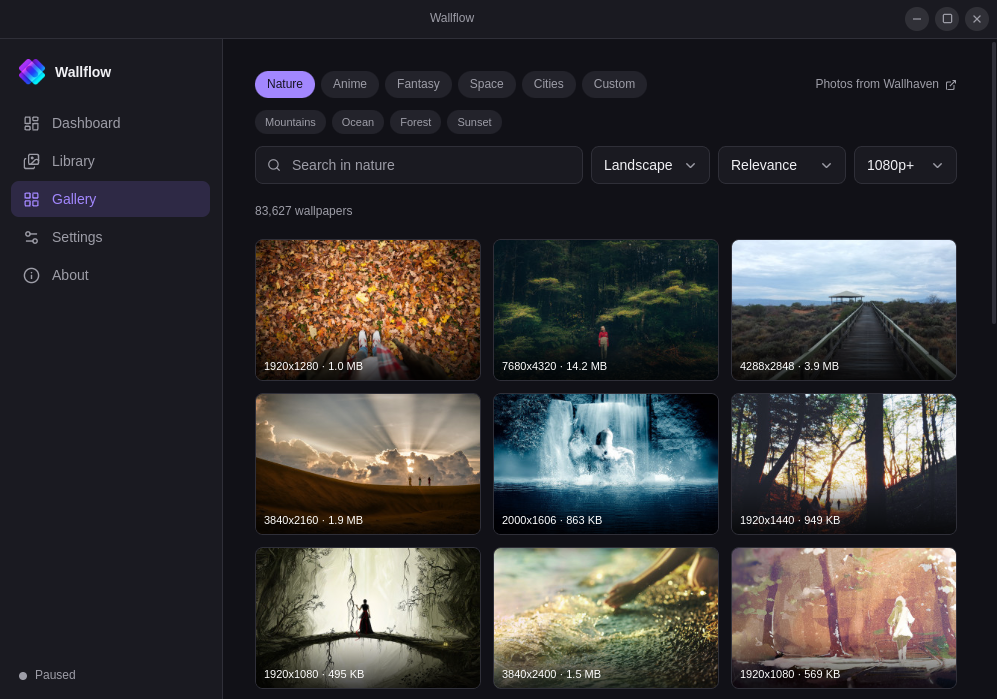
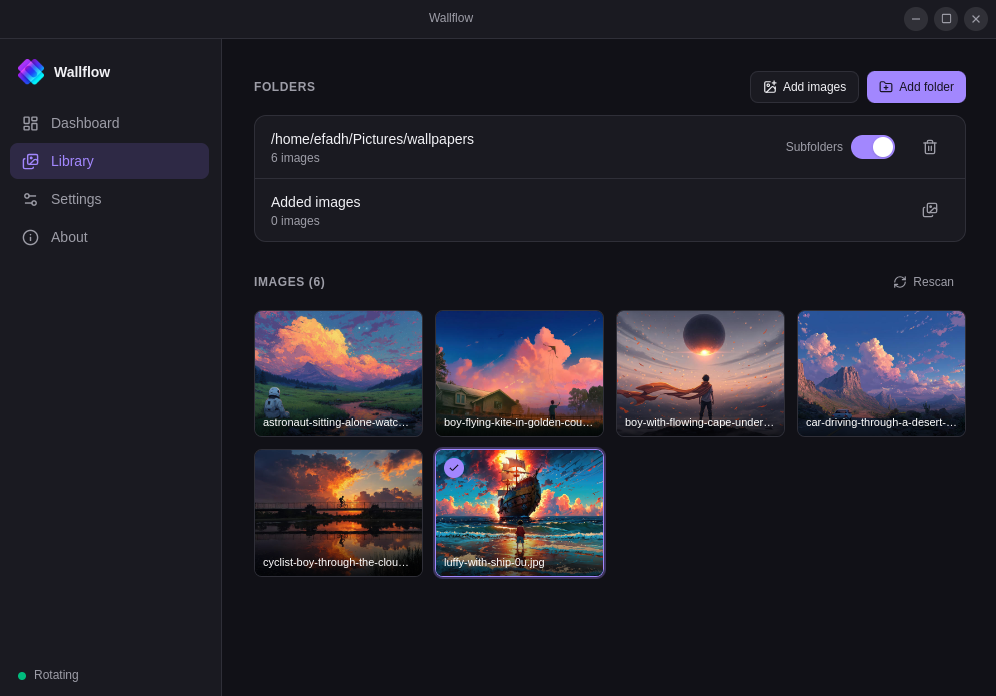
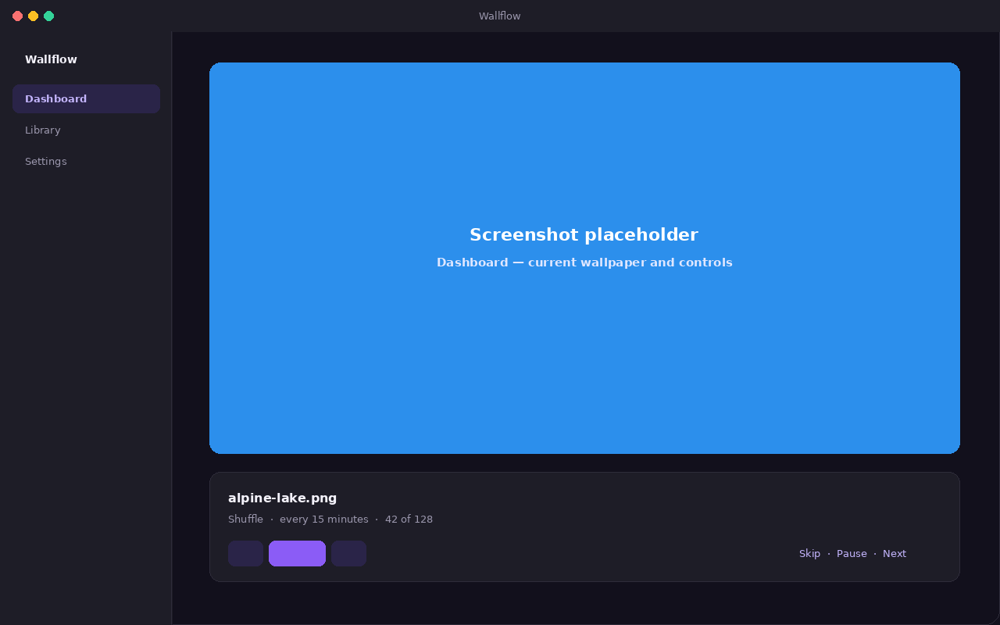
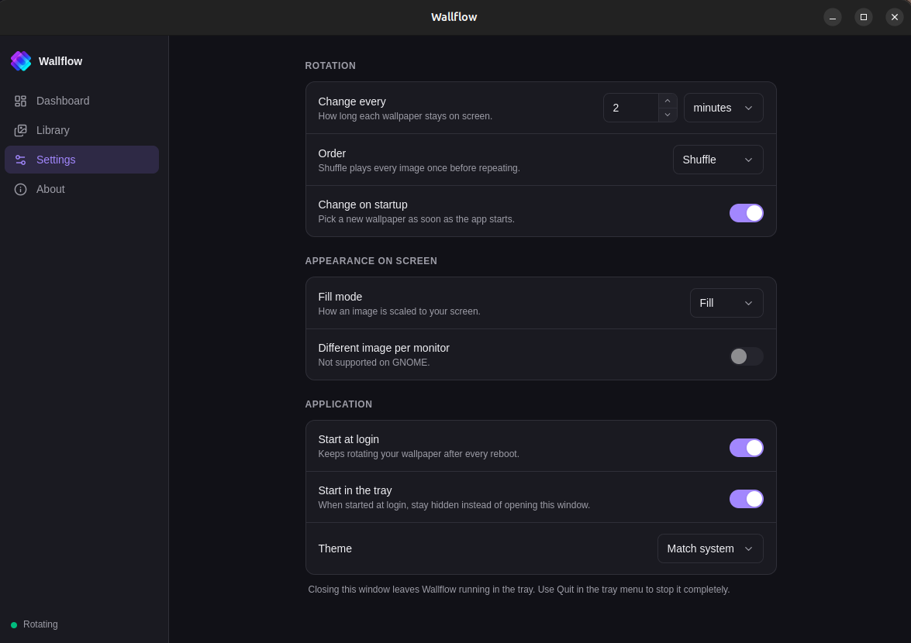
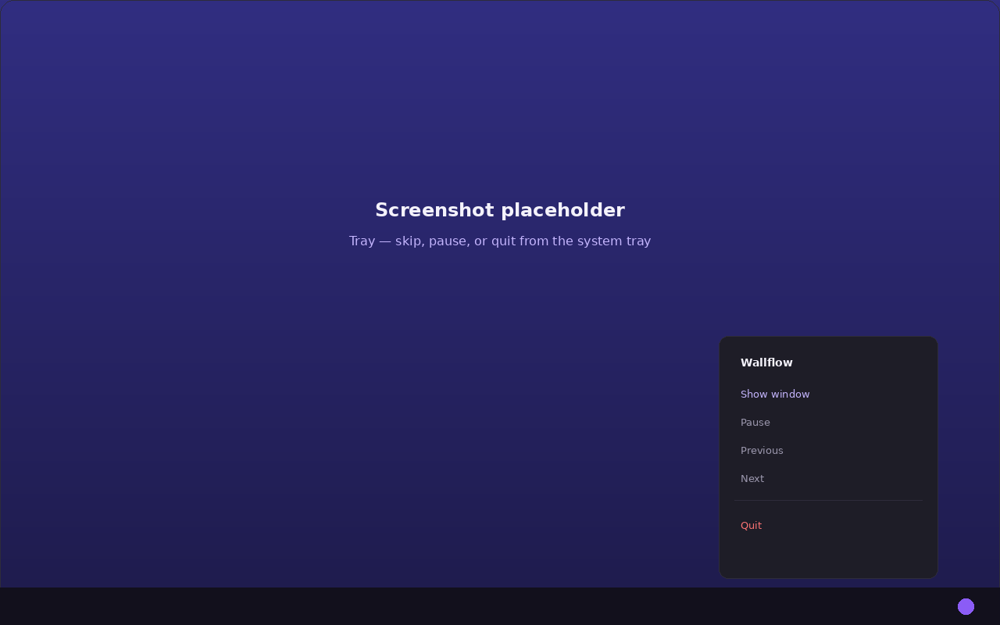

Ubuntu / Debian
.deb package
24.04 LTS or newer. Needs libwebkit2gtk-4.1-0.
sudo apt install ./Wallflow_1.0.5_amd64.debDesktop app for Linux, Windows and macOS
Watch folders, add files, or search Wallhaven from the Gallery. Wallflow lives in the tray, starts with your session, and stays out of the way.



What it does
Point Wallflow at folders you already have, add individual files, or browse the Gallery. Folders are watched in place; added files and Gallery downloads are copied in so they stay in rotation. Skip, pause, or apply one immediately.
Point it at one or more folders. JPG, JPEG, PNG, WebP and BMP files are picked up. New images join the rotation without a restart.
Pick files one by one. Wallflow copies them into its data directory so they stay in rotation even if you move the originals. Delete a copy from Library when you no longer want it.
New
Search landscape wallpapers from Wallhaven without leaving the app. Nature, anime, fantasy, space, or cities — or type your own query. Add one to the library, or set it as the wallpaper now. Listings are SFW only; no API key required.
Choose how often the wallpaper changes — in seconds, minutes, or hours.
Shuffle plays every image once before repeating. Sequential walks the library in order. Random picks without a playlist.
Fit modes map to whatever your desktop calls them, so the image lands the way you expect.
Browse the whole library as thumbnails. Click one to apply it immediately, or exclude images you would rather not see. Filter the gallery to the copies you added.
Skip forwards and backwards, or pause, from the window or the tray menu. Closing the window hides it; Quit in the tray stops the app.
A different image per monitor on Windows and macOS. Linux backends set every monitor to the same image.
It starts with your session and stays in the tray so the rotation keeps going in the background.
How to use
A short walkthrough of the usual first session, matching what you see in the app.
Open Library and click Add folder to watch a directory, or Add images to copy individual files into Wallflow. It scans for JPG, JPEG, PNG, WebP and BMP. Turn on Subfolders to include nested directories, or hit Rescan after you drop in new pictures. The Added images row shows how many copies you have; the icon beside it filters the gallery to those copies. Click a thumbnail to apply it now — the current wallpaper gets a checkmark.
Open Gallery to search Wallhaven. It starts on Nature with landscape photos already on screen. Switch parent chips (Anime, Fantasy, Space, Cities), tap a sub-topic, or use Custom for a free search. Hover a tile to Add it to the library, or Use now to set it as the wallpaper immediately. Photos are provided by Wallhaven.
Under Rotation, set Change every and pick Order — Shuffle plays every image once before repeating. Under Appearance, choose a Fill mode (fill, fit, stretch, center, or tile). Turn on Start at login and Start in the tray if you want it running after reboot without opening the window.

The Dashboard shows the current wallpaper, its filename, and how long until the next change. Use Previous, Pause, and Next there. The cards below list how many images are in rotation, how many were found on disk, and which desktop Wallflow detected.
Closing the window leaves Wallflow running. The tray (or menu bar) menu shows the current file, then Next wallpaper, Previous wallpaper, Pause, Open Wallflow, and Quit. Use Quit there to stop the app completely.

Install
Grab the file for your system below.
Ubuntu / Debian
24.04 LTS or newer. Needs libwebkit2gtk-4.1-0.
sudo apt install ./Wallflow_1.0.5_amd64.debOther Linux
Any distribution. Make it executable, then run it.
Download AppImagechmod +x Wallflow_1.0.5_amd64.AppImage
./Wallflow_1.0.5_amd64.AppImagemacOS
macOS 10.15 or newer. Apple Silicon and Intel. Not notarized, so the first launch needs a right-click then Open.
Wallflow_1.0.5_aarch64.dmg
Wallflow_1.0.5_x64.dmgWindows
Windows 10 (1803) or newer. Installs for the current user only. Not code-signed yet, so SmartScreen may ask you to confirm via More info then Run anyway.
Download .exeWallflow_1.0.5_x64-setup.exeCompatibility
On Linux the wallpaper is applied through whatever your desktop provides. Windows uses the
IDesktopWallpaper COM interface, with a fallback if that is unavailable. macOS uses
NSWorkspace, which supports a different image per display.
| System | Requirement |
|---|---|
| Ubuntu / Debian | 24.04 LTS or newer (needs libwebkit2gtk-4.1-0) |
| Other Linux | Any distribution, via the AppImage |
| Windows | Windows 10 (1803) or newer |
| macOS | 10.15 Catalina or newer (Apple Silicon and Intel) |
| Desktop | Mechanism |
|---|---|
| GNOME, Unity, Budgie, Pantheon | gsettings on org.gnome.desktop.background |
| KDE Plasma |
qdbus on plasmashell, falling back to
plasma-apply-wallpaperimage
|
| Xfce | xfconf-query, applied to every listed monitor |
| Cinnamon | gsettings on org.cinnamon.desktop.background |
| MATE | gsettings on org.mate.background |
| LXQt | pcmanfm-qt |
| Anything else | Tries gsettings, then qdbus, then feh |
About
Wallflow is a small open-source utility: MIT licensed, a few megabytes to install, and written so it can sit in the tray without getting in the way.
Developer: Emon Hossain (@efadhemon)